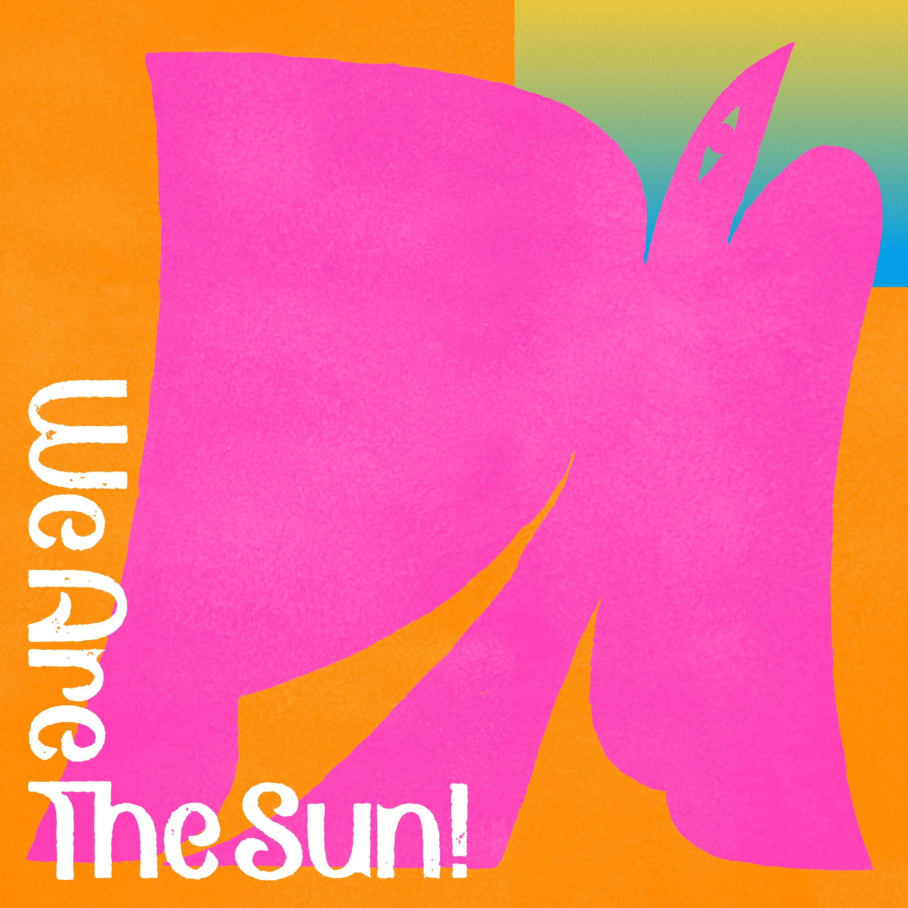

Day 134

TAMTAM ◆ We Are the Sun! ◆ 2020
本来没打算介绍这张，但是自从不知道多少个月前买了以后，时不时地听，越听越感觉有 分享的价值。感觉跟 Day 112 的 CRCK/LCKS 很像：非常流行，可能不太耐听，但是时不时听一下总会感觉很好听很有趣。我最喜欢的是 Worksong! Feat. 鎮座DOPENESS，Flamingos，Beautiful Bad Dream，和 Summer Ghost。
他们的另一张专辑 Ramble In The Rainbow 我也买了，也很喜欢。Doors 和 Nue 很好听。